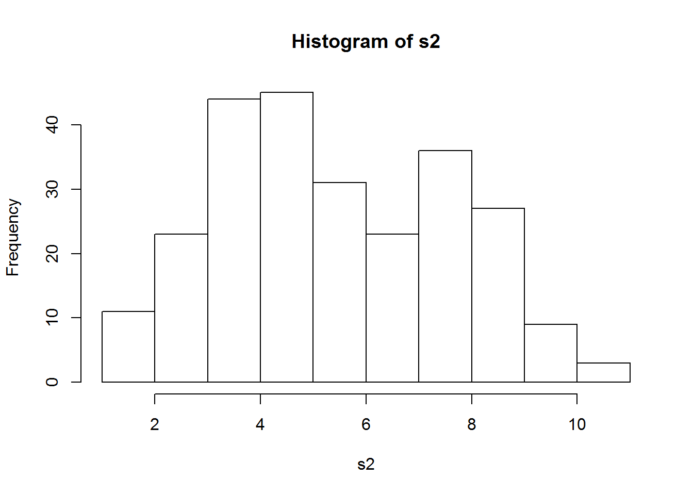
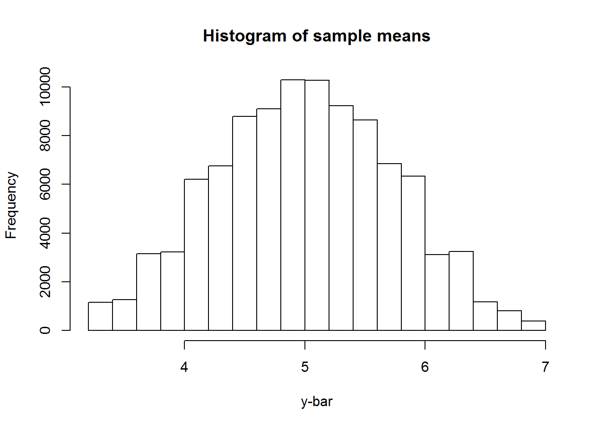
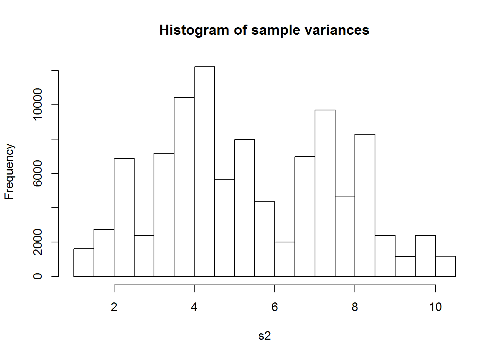

1 Toy Examples
Example 1: Simple Random Sampling
The population is shown as the following table.
| Unit_ID | \(Y\) |
|---|---|
| 1 | 6 |
| 2 | 8 |
| 3 | 8 |
| 4 | 1 |
| 5 | 6 |
| 6 | 4 |
| 7 | 7 |
| 8 | 5 |
| 9 | 3 |
| 10 | 3 |
The population size \(N=10\). Let us choose the sample size \(n\) be \(5\).
- There are \({10 \choose 5}=252\) possible samples—here we are talking about simple random samples (SRS). In practice, we can only have one sample, and there will always be uncertainty if we use one sample to infer the whole population.
- The population mean \(\bar{Y}=5.1\).
The distribution of all possible sample means is shown below. The mean of the distribution is \(5.1\), which is the same as the population mean \(\bar{Y}\). So, sample mean is an unbiased estimator of the population mean.

The population variance is \[ S^2=\frac{\sum_{i=1}^N (Y_i - \bar{Y})^2}{N-1}=5.43 \]
The distribution of all possible sample variances (NB: the divisor is \(n-1\)) is shown below. The mean of the distribution is 5.43, which is the same as the population variance. So, under simple random sampling, sample variance is an unbiased estimator of the population variance.

Example 2: Systematic Sampling
We use the same population as in Example 1, and we take 100,000 systematic samples of size 5. (NB: These samples are also simple random samples.)
a <- c(6, 8, 8, 1, 6, 4, 7, 5, 3, 3)
simu_run_nbr <- 100000
my_sys_sample <- matrix(0, 5, simu_run_nbr)
for(i in 1:simu_run_nbr)
{my_sys_sample[, i] <- sample(a)[1:5]
}
the_sample_mean <- apply(my_sys_sample, 2, mean)
hist(the_sample_mean, main = "Histogram of sample means", xlab = "y-bar")
(mean(the_sample_mean))## [1] 5.101526the_sample_var <- apply(my_sys_sample, 2, var)
hist(the_sample_var, main = "Histogram of sample variances", xlab = "s2")
(mean(the_sample_var))## [1] 5.448642